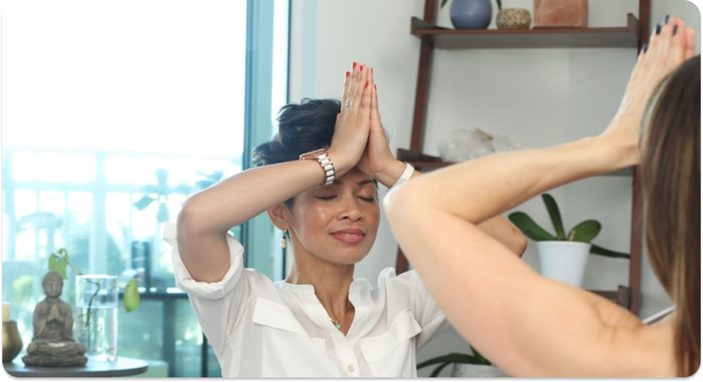

Konsultasi
Edukasi
Eksplorasi
Saling Bantu
Konsultasi
Edukasi
Eksplorasi
Saling Bantu
Meditasi Santai

Meditasi adalah kegiatan yang bertujuan agar memiliki pandangan jernih akan kondisi dan tetap merasa tenang dengan cara melatih fokus pikiran. Banyak orang yang beranggapan bahwa meditasi harus dilakukan di ruangan yang khusus dengan alunan musik yang menenangkan. Akan tetapi, stigma ini salah, karena meditasi dapat dilakukan di mana saja, kapan saja dan oleh siapa saja. Jika dilakukan secara rutin, meditasi dipercaya dapat menjaga kesehatan, terutama kesehatan mental.
Ada pula cara untuk bermeditasi sebagai berikut.
1. Memfokuskan pikiran
2. Bernapas secara perlahan
3. Duduk Tenang
Hubungi Kami
contact.ruangbersama@timnyambat.com
(+62)8123456789
Jalan Maju Terus No. 17, Buah Batu, Bandung
Social Media